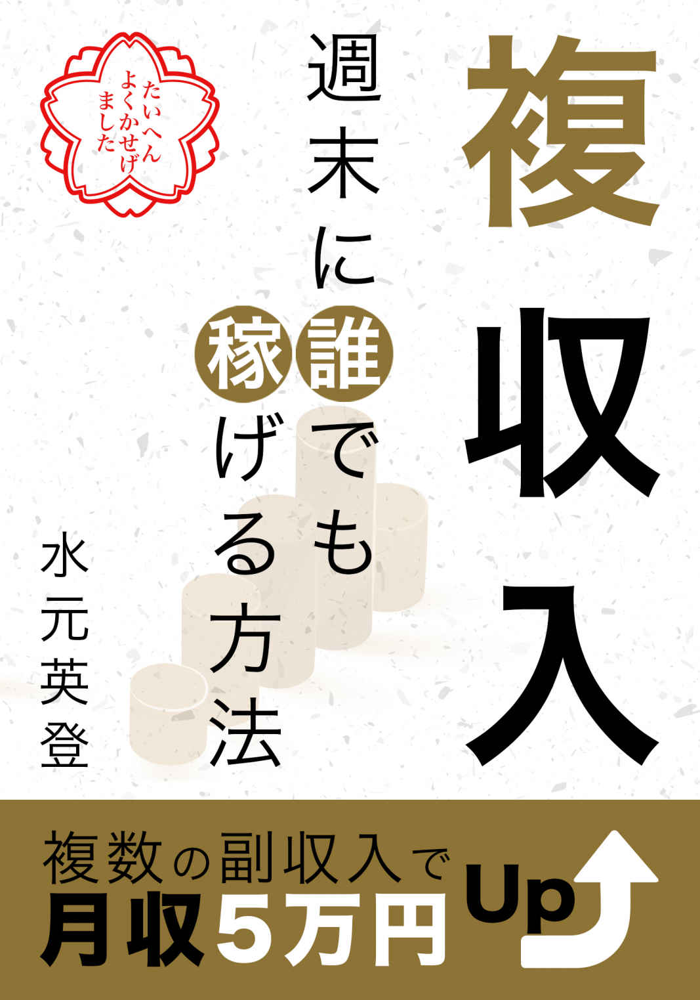
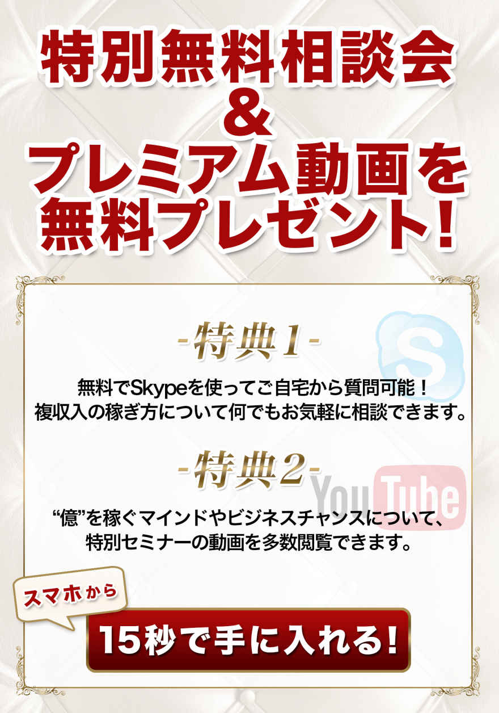

| 複収入 週末に誰でも稼げる方法 複数の副収入で月収５万円Up | |
| 水元英登 | |
| (2015) | |
複収入 週末に誰でも稼げる方法 複数の副収入で月収５万円Up

はじめに
はじめまして、水元英登（みずもと ひでと）と申します。
東京都出身、１９７９年生まれ。現在３５歳です。
この物語は、どうしようもなくダメだった私が、現在までどのようにして生き残って来られたのかを記録するために書き上げることにしたものです。
この物語の主人公は５年前の私です。３０歳の誕生日を迎えたその月の末、失業が決まっている将来の暗い社会不適合者です。大学生までは親の言うことをよく聞いて、学校の成績も良くて、優等生だったはずが、いざ社会に出てみると全く通用しない現実。その現実から逃げに逃げた結果でしたので、変な話ですが、納得の結果でした。
そんな私が書店で見かけるような自己啓発的な本と仲良しになり始めた頃、一人の人物と出会うという奇跡がありました。
１０社を経営し、５社の顧問を務めるビジネスのプロ中のプロ。企業の寿命がたったの７年と言われるこの時代に、１０年以上継続してミリオネアであり続ける、これまでお目にかかったことのない本物の成功者でした。
カノンホールディングス代表取締役会長 雜賀美明（さいが よしあき）会長。
これから私が偉そうに語る全てのことは、雜賀会長からうかがったお話のほんの一部です。きっと多くの人のお役に立つと思いますので、楽しんでいただければ幸いです。
私はこの物語を５年前の自分（と同じ境遇の多くの人）のために書くことにしました。これにより「なんちゃら塾」や「なんちゃらコーチング」やらといった本来見る人から見れば価値のない連中に、健気でまじめな人の大切なお金が流れないようにできると考えたからです。
そのお金があるのなら、正しい情報と知識のもと、正しく運用して欲しいと考えています。

第一章 まことしやかな嘘をガンガン暴く
カジノでお金が溶ける？
ようやく日本でもカジノカジノと言われるようになってきました。先進国なんて呼ばれている国の中でカジノがないなんて、日本くらいのものです。
皆さんはカジノについてどんなイメージを持っているでしょうか。
「お金が溶ける」
なんてこと言う人を知っています。日本人はカジノとはお金がなくなるところだと思っています。でも外国人はみんなお金が増えるところだと思っています。ちなみに私はカジノ必勝法を知っています。みなさんに対して「お金が増えますよ」とは言えませんが、「お金が減りません」とは言えます。
カジノで大負けしてしまうのは、知識（情報）が圧倒的に足りないからです。
この認識の違いは、持っている情報の違いによって生まれます。簡単な例で言うと、ずっと掘り続けていけば莫大な価値のある宝石にたどり着くと知っていれば、自分の持っている小さな財産を使い尽くしてしまったとしても掘り続けていくことができます。あと何メートル、ということまでわかれば全く怖くないですね。
逆に、宝石にたどり着く根拠となる情報に乏しかったり、情報そのものに自信が持てなかったりすると、たとえ自分の手持ちが取るに足らない小さな財産だとしてもそれを失うことを恐れて堀り進めることを止めざるを得なくなります。
まだ日本にはカジノが入ってきていませんが、既に日本にある競馬も同じことが言えます。先日私は天気予報が原因で直前に中止になってしまったお花見の時間を使って８５分で１５，７２０円プラスが出ました。これは運ではありません。世の中大体こんなものです。
現代の世の中で、いわゆる「できる人」はほぼ例外なく数字に強い人です。情報を素早く数字に変換できる人は実社会で強いです。
例えばサイコロを振って奇数が出たら勝ち、偶数が出たら負けというゲームの場合、無限にゲームを繰り返せば勝つ確率は限りなく５０％
近づいていきます。まあ、当たり前ですよね。ただし短期的には奇数が連続６回出ることもあり得ますし、逆に偶数が連続６回出ることもあり得ます。
でも勝ち続けることが不可能であるのと全く同じ論理で負け続けることも不可能です。
問題は勝つ時にいくらかけて、負ける時にいくらかけるのか。トータルで勝つ時にかけている金額が多ければ多いほどゲームに負けてもお金を儲けることができます。
さらに嬉しいことにこの必勝法には既に方程式があります。ですから誰にでもできることなのです。自分で考える必要はありません。誰かの考えた数式にあなたが現場で見た数字を当てはめるだけです。
まずここで共通認識として押さえておきたいことは、世の中の理不尽な不公平は、知っているのか知らないのか
、たったこれだけの情報の差でしかないという現実です。
お花見の日の競馬の話については後半で詳しく触れようと思います。
日本一入りたい優良企業「日銀」とは
あなたはサラリーマンとして働くならばどんな企業に採用されたいですか。ある就職情報サービス業者調べの２０１５年卒就職人気企業ランキングによると、
１位JTBグループ/２位オリエンタルランド/３位全日本空輸(ANA)/４位資生堂/５位伊藤忠商事、
だそうです。
直感的に仕事がイメージできる安直で幼稚な人が多いのだということがわかりますね。あなたはどうですか？
私がサラリーマンとして働くならば、採用されたい企業は一つです。「日銀」です。
日銀の最近の採用実績は２０１４年１２０人、２０１３年１０６人、２０１２年１０７人。全国の大学・短期大学等から幅広く採用しています。勤務時間は原則８時５０分から１７時２０分。初任給は大卒総合職で２０万５，４１０円（２０１５年度予定）。
「日銀」日本銀行とは、日本でたった一つの中央銀行ですが政府機関ではありません。
日銀は一番の業務として、銀行券の発行を行っています。銀行券とはつまり紙幣です。日銀が供給する通貨は２０１２年末には１３８兆円、２０１３年末には２００兆円、２０１４年末には２７０兆円となり、２年で日本に出回っている通貨の量は１３２兆円増えて約２倍になっています。これは日銀のホームページに書いてあります。
日銀が増えたお金で何をしていると思いますか？
日銀は自分が増やしたお金でせっせと日本株を買っています。日本株を一番多く持っているのは、厚生労働大臣から寄託されて年金積立金の管理と運用を行っている独立行政法人です。これはわかります。ただし、二番目に日本株を多く持っているのが日銀であるということにみなさんは納得がいきますか？
今、日銀が大バブルを起こしています。そして自分でお金を刷って株を買っています。日銀の一人勝ちです。
ずるいと思いますか？ずるいということは、うまいということの裏返しでもあります。この情報を知った私たちがやるべきことは、株を買うことです。つまり日銀と同じことをするということです。ただし、２０１８年、１９年までに売ってください。
日銀が起こしている大バブルは私たちの生活にも明るいニュースを運んでくれています。
仮想通貨ビットコイン販売所運営の「bitFlyer」はリクルートやGMOベンチャーパートナーズから１億３，０００万円の資金調達。アプリ収益化プラットフォームを展開するメタップスは４３億円を調達し、小泉内閣時代の金融担当・経済財政政策担当大臣だった竹中平蔵氏がアドバイザーに就任しました。
このように今の日本は、２０２０年の東京オリンピックまで
は非常にチャンスの多い場所であると言うことができます。
他にも米ドルを買うべき、など根拠があるいろいろな情報があります。
雑誌、テレビドラマ、まとめサイトを見ていれば稼げる
市場が求めているニーズというものはどのようにして見つけ出せばいいのでしょうか。
意外なことに、ミリオネアという人はあらゆるジャンルの雑誌をチェックしていたり、テレビドラマの視聴率ランキングの上位を見ていたり、グノシーやSmartNewsなどのまとめサイトを見ています。そこには今社会が何を欲しているのかが見えるからです。
映画だと作品シナリオが既にできていて撮影にも長時間を使います。テレビドラマは比較的短期間で撮影され、放送が始まっても撮影は続いているため、視聴者の反響を見て内容を変更することもあります。
例えば、２０１５年１月スタートのテレビドラマの平均視聴率ランキングを見てみると、
１位DOCTORS3/２位○○妻/３位銭の戦争/４位デート/５位ウロボロス
ということで、男女の恋愛をテーマにしたテレビドラマは皆無という結果になりました。これにより世の中に恋人のいない人があまりにも多くて、恋愛をテーマにしたストーリーなど全くウケないという世の中の動きがわかります。
あのディズニーランドでさえ、テレビコマーシャルは男女のデートではなく、女性同士の盛り上がる場所として描かれています。映画『アナと雪の女王』は、これまでのディズニー映画のハッピーエンディングパターンを脱皮した決意の作品でした。『シンデレラ』などの王子様と結ばれることが女性主人公の幸せな生き方という表現は否定され、『ターザン』などの一緒に冒険した汗臭い男と結ばれることが女性主人公のゴールという表現も否定され、最終的に選んだものは同性である姉妹愛でした。
私が高校生だった１９９０年代では初めて付き合った異性とはディズニーランドに行くものでしたが、それは昔の話です。
テレビコマーシャルには莫大な費用がかかるため、テレビコマーシャルをやれる会社の変化を見ているだけでも、世の中の流れはわかります。２０１４年大みそかから、２０１５年元旦に日付が代わるとコマーシャルが一斉に変化しました。一気に台頭したのは『ライン・モール(LINE MALL)』です。消費増税後、盛り上がりを見せたのは、消費税のかからない個人間取引です。２０１５年、いわゆる「CtoC元年」の幕開けを告げる変化でした。
くだらないメルマガ、フェイスブックは解除しよう
私たちに与えられた唯一有限な資源とは「時間」です。時間があれば、お金を増やすことができますが、時間を買うことは無理です。
それに準じることで、時間を守ることはできます。家事代行サービス、ドライクリーニング、外食などは自分の時間を守る価値のある選択だと思います。
つまり、「時間」＝「命」なのですから。
もうすでに廃れつつありますが、お金を稼げるようになるために「メルマガ」から勉強しようとする人も一定数いると思います。勉強とまでは言わなくても、ぼんやりと淡い期待を持ってメルマガに登録する人はいるものです。「誰でも」「楽に」「高額」という甘い誘惑が用意されているからです。
なんらかの役に立つ情報を得られるのではないか。読むことで得をするのではないか。読まないと損をするのではないか。いろんなぼんやりとした淡い期待です。
でも、断言できるのは「誰でも」「楽に」「高額」という情報は"ない"ということです。なぜあなたは、そんなものを信じてしまうのですか？「見るだけ見てから決めよう・・・と思ってて・・・」というのは信じているってことですよ。
それより重要な事件が起こっています。
メルマガを読んでいる時点で、あなたは損をしています。大きな取り返しのつかないマイナスを自分から生み出しています。あなたにとってもっとも希少な資源「時間」の流出です。
私はスーパー女子大生のプロデュースのお仕事にも関わらせていただいているのですが、彼女らに例外なく言えることは「永遠の若さ」に対する淡い期待を持っているということです。頭ではわかっているけれども、心ではわかっていません。時間資源とは、蛇口からの水漏れのように、気づかないくらいの漏れ出しだからです。
メルマガというのは、価値のある情報よりも、心理的な揺さぶりに満ちています。そんなものにつき合うくらいなら、一応の取材のもとに構成された出版物である「雑誌」の方がまだマシということです。
「あなただけ」が知ることで得をする情報なんてものは、そもそも幻想なのですから、それ以前の世の中がどう動いているのかの情報を収集して、まずは一般常識に追いつきましょう。
このように決定的な情報というものは世の中に普通にあるものなのです。問題があるのは受取手の感覚であったり思い込みであったりします。世の中に、誰も知らないけれどもあなただけが知っているうまい話というものは存在しません。
厳密に言うと、世の中の億万長者だけが知る情報というのはあります。でも、これについては現状でどうのこうの言っても、私たちでは手が届くものではないので気にしても前向きな解決策はありません。それよりも、世にありふれた情報の中からどのような分析をするのかが、出てくる結果の違いとなることを断言します。
現代の日本は情報過多であると同時に、有益な情報と有害な情報で溢れています。
あなたが今すぐできることは、くだらないメルマガの類を一切解除し、不要な情報を遮断することです。全く役に立たない、自己満足のつどいであるフェイスブックも情報発信のためだけに使い、一切他人の投稿は読む必要がありません。

第二章 どの世界で生きていくのかを決めよう
がんばれば、むくわれる の大嘘
世の中は所得水準によって５つのレベルに区分することができます。
・ 年収０〜１，０００万円
・ 年収１，０００万円〜１億円
・ 年収１億〜１０億円
・ 年収１０億〜１００億円
・ 資産１，０００億円以上
年収１億円から１０億円の人たちのことを「ミリオネア」と言い、１０億円から１００億円の人たちを「ビリオネア」と言い、資産１，０００億円以上の人たちのことを「大富豪」と言います。
大富豪とは、マイクロソフト共同創業者ビル・ゲイツや世界最大の投資持株会社会長兼CEOウォーレン・バフェット、オラクル共同創業者兼CEOラリー・エリソンみたいな人のことを言います。日本にはたった３５人しかいません。
驚くべきことに、日本の総人口の９９％
が一つ目の年収０から１，０００万円のカテゴリに属しており、逆を言えばわずか１％
の少数の人が所得上位を占めていることになります。
所得水準による５つのレベル区分のそれぞれの社会的役割は全く別のものです。それぞれ見てみると、
・ トレンドに乗せられている
・ トレンドに乗っている
・ トレンドを作っている
・ トレンドの仕組みを作っている
・ 時代そのものを作っている
一つ目のレベルと二つ目のレベルとの間の分厚くて高い壁。このあっちとこっちの違いは「依存」と「自立」です。会社に依存しているサラリーマンという状態では現実的には一つ目のレベルから抜け出すことは非常に難しいことです。
どうしてかというと、
年収０から１，０００万円カテゴリの人は、アドオン（積み立て）型と呼ばれていて、１件いくらの仕事を今月はいくつ取れるかという毎月の売り上げを気にする働き方をしています。会社という仕組みに依存していたり、与えられた商品という物に依存していたりします。
このカテゴリの人は、収入が増えるほどに仕事は忙しくしんどいという特徴があり、収入が高いほど「自分は偉い」と思ってしまう傾向にありますが、「依存」しているものの変化によって一夜にしてひっくり返ってしまうほどに不安定な立場です。
数字を知っている者が世界を制する
シャツを買う時に、正規の値段に横線が引いてあって、５，８００円のものが２，８００円になっていたら、最初から２，８００円のシャツを放り出して、値引き商品に喜んで飛びついてしまう。あなたにはそんな経験はないでしょうか？
ランチコースに２，０００円の松、１，８００円の竹、１，２００円の梅の３種類あった場合、なんとなく真ん中の竹を選んではしまわないでしょうか？
世の中にはさまざまな数字のマジックが存在するわけですが、ビジネスセンスのある人というのは、ほぼ例外なく数字というものに敏感で、かつ数字に強いものです。関東における花粉症対策の市場規模と言われれば、ネットでささっと検索できる程度の数値から一瞬で算出してしまうほどです。
自分の見込み客がどれくらいいるのか。どうしたらわかると思いますか？
市場、マーケット、商圏なんて言われる分野の話です。
得た情報を素早く数字の形にして理解できる人は非常に強いです。例えば、宝くじの１等が当たる確率はマッチ棒を縦に隙間なく並べて５キロメートルのうちの１本です。ちなみに統計学の世界では１０万分の１以下の数字はゼロと解釈するそうです。
売り上げを２倍にする戦略を考える場合。まずは売り上げを構成する数字に分解します。
売り上げ ＝ 単価 × 個数
さらに
個数 ＝ 客数 × 頻度
この場合、単価を２倍にしても、客数を２倍にしても、頻度を２倍にしても、売り上げは２倍になります。でも、単価を２倍にする値上げも、客数を２倍にする集客も、頻度を２倍にする流言飛語も、難易度は非常に高いです。あのエジソンでさえ、トースターの発明による「３食を食べましょう」運動で頻度１．５倍ですからね。
実はそれぞれを１．３倍にすることでも売り上げを２倍にすることはできます。
一部で「人類史上最大の発見」と言われる「複利」についても、数字に強い人ならば直感的に理解します。元金だけでなく利子にも次期の利子がつくことに注目するわけですね。
ありそうでなかった、ミリオネアのビジネスモデル
みなさん、実感は全くないと思いますが、今、日本にはあるところにお金がジャブジャブあります。どうですか、実感ありますか？雜賀会長は１００人入りのセミナー会場に入りきれないくらいの１万円があるとおっしゃっていました。
だから投資先を探しているところはたくさんあるわけです。
雜賀会長はM&A（企業の合併や買収）の会社で打ち合わせがあったそうなんです。監査法人と呼ばれている公認会計士の先生方がいる、大企業の監査や上場企業のスキームをするような会社さんからいろいろ案件があるらしいんです。こういう会社が今売りに出ています。もしくは買いたいといったことです。
あとは弁護士法人。一人二人でやっているところではなく、大規模でやっているところです。やはりそういうところからいろいろな情報が来るんですね。
三つ目は証券会社です。
今、ご存知のように株は２１世紀で最高の値をつけています。ですから証券会社のところにもいろいろな情報が来るんです。
買いたい会社があったら売りたい会社を探しますし、そういったものをマッチングする仕事をしています。もちろん億単位の取引となります。
今は病院とかクリニックというものも、ものすごく売り案件を探している人が多いです。つまり、買いたい側の人が多いということですね。
M&Aと言うとみなさんはあまり実感がないかもしれないのですが、２０１２年に、いわゆる「２０１２年問題」というものがあったのをご存知ですか？２０１２年ですから、もう３年経ちますね。
これは何かと言うと、今日本の人口は毎年２６万人ずつ減っているんです。これ、妙な減り方なんですが、放射能が一部影響があるんじゃないかとも言われていますが、そうじゃなくても少子高齢化でこれからは減る一方なんですよね。人口１億２千５００万人のうち一番人口の多いところが団塊の世代って言われるところなんですね。その人たちが２０１２年に６５歳を迎えたんです。だから今年は６８歳、６９歳になりますね。
６５歳を過ぎると、経営者の人たちも「そろそろ引退かな」と、普通は考えますよね。ですから、その時に事業継承を考えるわけです。自分のやっている会社、お店、病院いろいろありますが、それを誰かに継承して欲しいということです。まあ、普通に考えると、子供を考えますよね。息子さんなり娘さんなり。なかなかそういうお子さんが適材適所でいない場合とか、あとは会社の中で役員とか社員もなかなかいないということで、もう手放さざるを得ないという人がすごく増えたんです。それ以降２０１３年、２０１４年、２０１５年も増えています。年々増えています。
ですから、すごく良い会社、技術もあって商品も良くて、工場もあったりとか、内部留保という要は会社の貯金まであるのに手放さざるを得ないというものがすごく多いんです。
一方で、アベノミクス効果で儲かっている会社や個人の方も多いんですね。買いたいという側です。これをマッチングするということを一つの会社ではやっています。
それから、アプリの企画・開発の会社もあります。
飲食店向けのアプリを開発して、「CMS」と言われるいわゆるプラットフォームを作って、それを売っていただける代理店の方がいます。アプリというものは普通、制作が１００万円以上するのでなかなか飲食店の方作れないのですが、初期費用が数万円プラス月額が数千円で使えますよというアプリを作って、販売会社の方に販売してもらったりしています。
あとは風評対策というものもやっています。
マイナスキーワードやマイナスサイトというものを書かれて困っているという企業さんとか、病院、学校、または個人で言うと政治家さん、芸能人、ネット系の人とか、そういうものを削除できるんです。
マイナスのキーワードとは、例えば、ABCという会社を検索すると、ブラックとか、倒産とか、詐欺とか、表示されるんですが、それは１００％
削除できます。
それから風評サイトというものが『２ちゃんねる』をはじめとしてたくさんあるのですが、これをほとんどの人が２ちゃんねるだと思っているんですけれども、２ちゃんねるを上手くコピーしたものが多いんですね。ドメインを見ていただくとミミズクとかいろいろあるんですが、２ちゃんねるのサイトのデザインとかをそのままパクってやっているものが、今、６０以上あります。
そこに、あ〜でもないこ〜でもないと書かれるわけです。
まあ、書く人も暇な人が多いんですかね。ここのところ暇な人が増えたんでしょうね。
でも、これを書かれる方はたまったもんじゃないわけです。政治家の方も、今はネット選挙ですから、そこに書かれると投票者の方はスマホなどで候補者の方を検索するんです。なんとかさん・・・愛人とか。横領とか。夜逃げとか。書かれたら、普通投票しませんよね。
こういった困った書き込みを削除できるということも、そういう情報を知っているか知らないか、活用するかしないかの差なんですね。
時間がない。お金がない。人脈がない。・・・それで？
時間がない。お金がない。人脈がない。
という言い訳は今や死語となっています。この時代、上場するよりも資金調達は容易になっています。かつ、インターネット社会の広がりによって、面白い「企画」さえあれば人が集まってくるほどの時代です。
中でもプラットフォームが整備され、もっとも広く門戸が開かれているのは「クラウドファンディング」と呼ばれる方法です。
クラウドファンディングとは、「Crowd」＝群衆、「Funding」＝資金調達という言葉を掛け合わせた造語で、インターネットを通じて不特定多数の個人から資金を集めるサービスです。新しい資金調達の手段として注目されており世界中で５００以上のクラウドファンディングサービスが存在します。日本で最初のそして最大のクラウドファンディングプラットフォームであるレディーフォー(READYFOR)では、２０１１年４月のオープンから約２０２０プロジェクトの資金調達行い、これまで合計で７万７千人から約１０億円が支援されています。
日本のクラウドファンディングは、寄付や投資ではなく、購入型のクラウドファンディングです。プロジェクトを始める実行者は、お金を集める代わりに、お金を支援してくれる支援者に対してリターンをお返しします。双方向のやり取りによって支援者とつながることで長期的な支援やコミュニティーづくりにも役立ちます。
このクラウドファンディングは、資金の使い道についてもオープン性が問われるので、必要経費ギリギリの申請となり、ものすごく利益を出せるとは言えないのですが、事例・実績を築くには最適な方法です。
生徒の過半数以上を海外から受け入れる日本初の全寮制国際高校「インターナショナルスクール・オブ・アジア軽井沢(ISAK)」を開校した小林りんさんのエピソードがあります。寄付金集めに奔走する小林さんは、２０１０年から始めたサマースクールによって学校の認知度と信頼度を上げていました。２０１３年、２週間のサマースクールを開催する際、利用したのがクラウドファンディングでした。２５０万円の目標金額に対して、２８０万円を超える支援が集まりました。
小林さんはこれを事例・実績として、開校までの期間に１４億円の寄付を集めることに成功しました。

第三章 一瞬で億を稼ぐ小僧ってどんなやつだ
２２歳の１億円プレイヤーの違い
２２歳。その子は大学には行っていないのですが、大学生で言うと３年か４年。それから２３歳の社長の子たちと雜賀会長は今一緒に仕事をしていらっしゃるそうです。それで、彼らの年収は１億円を超えているんですね。２０・・・２、３と言ったらまだ子供ですよね。
そういう子たちと話をしていて、まあ、普通のアホな大学生とか、失礼な言い方になってしまいますが、アホな一般の会社員とかOLとかと話をしていて何が違うのかなと考えてみたそうです。
片や２２歳で年収１億円、片や２２歳のフリーターだと１００万円とか。普通に１００万円の人なんてたくさんいますよね。大学生なんて１００万円もいかないでしょうからね。
１００倍違うわけですよ。１００倍です、わかりますか？１年間で稼ぐお金が１００年分です。１００年も生きないでしょ？みなさんどうですか？
何がそんなに違うのか。
これはみなさんの年齢、どの年代でも同じことが言えますよね。片や年収３億円の人もいれば、片や３００万円の人もいる。
１００倍違いますよね。
目は二つ。鼻は一つ。口は一つ。何が違うんだと。
その子たちとしゃべっていて思ったのですが、何が違うかというと「自信」があるかないかなんです。
要は、大学生の子もそうなんですけれども雜賀会長は５分くらいしゃべれば、その人がビジネスで成功するかどうかってだいたいわかるんです。どの年齢の人もわかります。なぜかと言うと、今まで経営者として面接を２，０００人以上しているので、もうわかるんですね。そのポイントも。
自信がある人というのは、根拠のない自信のことではありません。自分にはこれができる。やってきたという自信です。この自信がある人がビジネスで成功していると言えます。
簡単なことですね。自信がない人は、何かに頼ってしまうわけですから、それでは、いつまで経っても成功なんてできません。
相手に依存してしまう人は、相手の力に頼るわけですから、常に相手から奪うことばかりを考えています。サラリーマンがその例で、より高い給料、よりよい福利厚生、十分な有給休暇を得ようと様々な努力をするものです。
自分に自信のある人は、自立しているので、常に相手とお互いの良い点を引き出そうと考えています。「あなたはこれができますね。私はこれができます。」という形です。
まず自信を持つためには何をすればいいかというと「決断」っていうのが一番重要なんです。何かを決断する。決断っていうのは、書いて字のごとく、何かを決めて、断つんです。
例えば、「年収１億円を目指します。」というのは誰にでも言えますね。
それでたぶん初詣とか行かれた方も多いと思います。
これがダイエットでもいいです。１０キロ今年は痩せますでもいいです。
これを決めたら、他のことは一切断たないとダメなんです。いいですか？
他のものとはなにかと言うと、
もうデートとかしてる場合じゃないです。合コンとかやってる場合じゃないです。パーティーとか行ってる場合じゃないです。メルマガとか読んでる場合じゃないです。くだらないバラエティ番組も見ている場合じゃないです。ネットサーフィンなんてとんでもないです。ゲームもとんでもないです。飲み会とか一切そんなことダメです。断たないといけないですから。
これができるかどうかです。
ほとんどの人はこれができていないわけです。９９．９％
の人です。だってできるんだったら、みんな年収１億円になってますからね。本屋さんに行けば年収１億円になる本なんて山ほどあるでしょう？あれを読めばなれますか？ならないですよね。あれを読んでなったという人の話を聞いたことがないです。
なぜできないかというと、決めたことを断つことができないんです。断つというのは、やめるということです。これは男性も女性も関係ないです。ダイエットもそうですよね。ダイエット３ヶ月で１０キロ痩せます。と決めたら、まず間食をやめる。当たり前ですよね。なるべく糖分を控える。この断つもしなきゃダメでしょう。全くライフスタイルを変えずに、間食して、寝る前にポテトチップスとコーラを飲んで痩せるわけがないですよね。全部一緒なんです。仕事にしろ、収入にしろ。
それで、何をするにも、決めて断つということが重要なんですが、そうすると何が起こるかというと、
リスクっていうのが発生するわけですね。
リスクというものを取る人と取らない人がいるわけです。どっちがいいのか。これはその人の考え方があっていいのですが、今の時代はリスクを取っても取らなくてもリスクがあるんです。リスクを取らないのもリスクなんです。わかりますか？
どういうことかというと、今みなさんが、例えば月収３０万円である会社にいるとします。あるビジネスチャンスがあって、起業するかどうか。というような時に、起業するのもリスクですけれど、このままいるのもリスクなんです。
これ、どういうことがというと、FXとか株式とかやったことある人だったらわかるんですけれども、「ポジションを取る」と言いまして、例えば今Aという会社の株を買って１万円だったとしますね。今日、４月１３日に買いました。これをポジションを取ると言います。
ここから上がるか下がるかですよね？二択しかないです。
これを明日以降ずっと持っているのもリスクなわけです。わかりますか？上がればいいんですけれど、下がる場合もあるわけですから。下がった時に売るのもリスクですよね。
ですので、何かをする時に、するのもリスクなんですけれども、しないのも全てリスクなんです。
なぜか？
この会社にいて、じゃあ、３年後、５年後、１０年後。この給料をそのままもらえるという保証はありますか？かなり難しいですよ。まず、倒産のリスクがありますよね。上場企業でも今は倒産する時代です。どんな大企業でも倒産する可能性はあります。仮に倒産はしなくても、みなさん自身がリストラされないっていう保証は全くないわけです。違います？
その会社がどんなに儲かっていても、ある日呼ばれて「残念だけど網走行ってくれるか？」今、クビというのはできないので、だいたいどっかに飛ばすか、地下の窓がないところに、電気もつけないで何も仕事がないところに閉じ込められる。「辞めさせてもらいます」と言って欲しいわけです、会社としては。
ですので、今の状況がずーっと続くとみなさんほとんどの人が思っているわけですが、続くわけがないんです。
成功最短最速の方法
成功をするための最短最速の方法っていうのがありますけど、知りたいですか？
これは大学生でも関係ないです。
なぜ２２歳のまだ子どもみたいな若者が年収１億円も２億円も稼げるんだろうという話です。これは、みんなこの最短最速の方法がわかっているからです。これをやっているからです。
普通の大学生がどう転んでも、パーティーやろうがなにしようが、雜賀会長もパーティーをやっていましたからわかるそうですが、パーティーやって年収１億円なんていきませんよ。せいぜい年収・・・当時どれくらいだったかというと、月収２００万円だから年収で２、３，０００万円です。億はいかないです。
これはなにかというとですね。一つに絞って自分の得意分野を決めて、他のできないところは他の人と組むということです。そういうのを英語でジョイントベンチャー(JV)
と言いますね。
どういうことかというと、例えば自分はこういう商品を作りましたと、でもお客さんを集める能力ないです。販売する能力ないです。よくあるケースですね。それは集客力のある会社、販売力のある会社とジョイントすれば良いわけです。それを３とか４とかで割ったとしても、この人が一生懸命集客とか販売して売るよりも、はるかに売り上げも利益も上がります。これは大企業も全てやっています。
ハウスメーカーってありますよね？ハウスメーカーって自分でお客さんを集めてないですね。商品も実は作っていません。有名ハウスメーカーに家を頼むと、実際に商品を作るのは町の工務店です。下請けの。作った後で、ペタッとハウスメーカーのシールを貼るだけです。ハウスメーカーの社員が大工とかやってるわけじゃないんですよ。企画はするかもしれないですね。じゃあ、集客は誰がやってます？電通がやってるんですよ。電通がテレビコマーシャルとか。ハウスメーカーの社員が街でチラシとか配ってないでしょ？販売は誰がやってます？そこの営業会社がやってますよね。
車もそうですよね。自動車メーカーが企画して、作るのは下請け、で、集客は電通がやってます。で、販売はディーラーがやってるでしょ？
大企業でさえこれをやっているのに、個人が一人でこんなものできるわけがないんですよ。当たり前ですけど。スーパー天才でもできないですよ。だってプログラマーがいたとしたって、商品は作れるかもしれないけど、集客も販売能力もなかったらそうもいかないでしょ？全てそうなんですね。
自分は企画が得意だったら、商品化してくれる人、集客してくれる人、販売してくれる人と組めば良いわけですね。だから、ここのどれかに自分はフォーカスしないとダメです。どれかを決める。これは年齢とか一切関係ありません。
例えば、雜賀会長は大学生の時３，０００人くらいのパーティーをやっていたといいます。
雜賀会長は企画をやっていただけです。商品を作っていたのはスタッフです。集客したのはサークルのリーダーです。販売したのはサークルの人たちですね。チケットでね。でも、一回３，０００人集めるとリーダーたちにコミッションを渡しても、一回４００万円くらいの利益が出るんです。やっているのは企画だけ。ほとんどの人はあれもこれもそれもってやるから、力も分散するし、先ほどから言っているように無理なんですよ。一人とか一社とか。大企業でも無理なんですから、我々のような中小企業とか無理に決まっているわけです。
だから、さっき言っていた２２、３歳の子たちはこれがわかっているから、集客だけに特化します。で、商品、すごく良い商品がある人と組むとか。その場合は２社のジョイントベンチャーになりますね。いや、販売すごくうまい人に頼みたい。これなら３社のジョイントベンチャー。いや、もっと企画力が欲しいって言ったら４社のジョイントベンチャー。それを３で割っても４で割っても、１社だけでやる売上や利益よりもはるかに良いわけです。その方が良くないですか？わかってない人はコツコツコツコツ自分でやってるんですけど、それだと１万年経っても１億円にはいかないでしょうね。残念ながらね。
これをぜひ学んでいただければと思います。
欲しいのは努力ではない
実は全部一人でやるようなビジネスモデルだったとしてもがむしゃらに頑張れば月収１００万円くらいまでは行くことができます。まあ、大体年収１，０００万円のラインですね。これ以上のステージに進もうとする場合、例えば１億円プレイヤーとかですね。どう頑張っても一人では限界というものがあります。
この場合どうすれば良いのでしょうか。
月に得た１００万円のうち、半分からできれば３分の２を自分のものにせずに外に投じる必要があります。それは、アウトソーシングであったり、ジョイントベンチャーであったり、社員雇用であったりします。
この段階で得られるお金は減りますが、自分には時間ができます。そうすることで仕組みを作り、年間１，０００万円のビジネスを二つ三つと所有するのです。
ビジネスをやる上で、決してなってはいけない状態というのがあります。それは、意外に思う人がいるかもしれませんが、「必死」です。だって、必ず死ぬんですよ。
「頑張る」とか、「努力する」とか、そんな言葉は自己満足以外の何物でもないわけです。「頑張る」とか「努力する」というのは、「目的」のための「手段」「プロセス」「通過点」なわけです。この「手段」が「目的」化している人が多過ぎます。
「頑張れば、むくわれる。」なんて他力本願そのものです。そんなものが通用するのは実家暮らしの大学生までです。大事なのは、「頑張る」ことではないですよね。頑張ることで気持ちよくなってしまってはダメだということを自覚してください。
センターピンを倒せ
人間には誰にも等しく１日２４時間が与えられています。同じ時間を使うのであれば、エンドユーザー一人一人とアポを取ってセールスするスタイルは大変な時間と手間を取られてしまいます。
年収０〜１，０００万円の人のカテゴリをアドオン（積み立て）型と言いましたが、ここにいる限りは時間と労力の積み重ねでしか得られるものに反映されません。もちろん経験と実績のために必要なプロセスではありますが、この間も次のステージを意識する必要があります。
一人のエンドユーザーに会うのであれば、同じ時間で１００人のグループのリーダーと会ってみてはどうでしょうか。１件５０万円の商品をセールスするのであれば、同じ時間で１，０００万円を動かすことができる経営者に企画のプレゼンをしてみてはどうでしょうか。
ちょっと考えればわかることではあるのですが、どうしてこのような状態に陥ってしまうのか。これについてハッキリさせておきましょうね。
自分だけが知っていて、相手は何も知らない状態というのが、居心地がいいからです。
どうしてもそのような状況に甘えを見せてしまうからです。
自分よりも高い次元で活躍している人と会い、話すというのは、とっても居心地の悪い事です。そりゃそうですよね。自分の立場が下なのですから、自尊心も傷つけられます。
でも、これこそが成長の時でもあるということです。
坂を上がる時には必ず負荷がかかるものです。負荷がかからない道ばかりを探して進んでいくと、現状より下がる一方です。この上がる下がるというのがとっても大事で、上がっていかないと上の人からは相手にされません。
自分に何も変化を起こさないのに、身の回りが変化を起こしてあなたに手を差し伸べるなどということは、ないということですね。

第四章 今すぐできることはなんですか？
お花見の中止で時給１１，０００円の副業
３月２８日の日曜日。午後から雨の予報が出ていました。
当日は代々木公園でお花見が企画されていて、私は本当に軽い気持ちで参加を申し込んでいました。ところが主催者側の判断で前日に中止が発表されて、１日の予定がぽっかり空いてしまった日がありました。
私は仕事の予定も全く入れていなかったので、雜賀会長から聞いていた競馬に関する方程式を覚えていて、これを試してみようと思い立ちました。
この方程式は統計学に基づく投資額の算定方法です。
通常、統計の世界では４，０００サンプル以上集めることができれば偏りのない有効な統計が取れるとされています。どういうことかというと、コインを投げて表と裏の出る確率はそれぞれ５０％
・５０％
であるはずです。しかし、５回程度のテストでは、５回連続で表が出続けることもあり得ます。これが、４，０００回程度テストすれば等しく半分半分の結果になるという考え方です。
日本中央競馬会(JRA)の年間のレース数は３，４００レースだそうです。これだけのサンプルがあれば統計上過去の記録から未来でも同じようなことが起こると高い確率で期待できます。
結果的には私は特に予想もせずに、方程式に該当する数字を当てはめるだけで午前中の４レースで、プラス１５，７２０円のお小遣いを手に入れて家路につきました。費やした時間は９時５５分から１１時２０分の８５分です。スポーツ紙さえいりません。
これも知っているか知らないかの違いだけで、ぽっかり空いた隙間時間で悪くない利益を得ることができる証明です。もともとぽっかり空いてしまった時間の隙間です。普段の時給よりも多少低かったとしてもいいじゃないですか。もともとなかったものなのですから。
この統計は本当だと実感した事例がもう一つあります。フェイスブックで、友達が１，０００人くらいの時は年齢や職業が自分に近い気の合う仲間たちというようなコミュニティーでしたが、私の友達が今ほぼ５，０００人なのですが、友達が４，０００人を超えると日本の人口の年齢別割合に合わせるかのように大半がお年寄りという、いびつな友人関係になっています。
来る者は拒まずというのも考えものですね。これには苦笑いです。
"事例・実績"
自信を持つ。という話を思い出してください。
自信を持つというのは、言った者勝ちという意味ではありません。「根拠のない自信」というものが許されるのは中高生までだけです。いいオトナになって、根拠のない自信ではお話になりません。これは、わかりますよね？
決断する前に何をすればよいかというと、
小さな成功体験を積み重ねるということです。これは本当に小さくていいんです。会社員の人もいるでしょうし、大学生の人もいるでしょうし、経営者の人もいると思いますが。
どういうことかというと、例えば年収１億円を目指すんだったら、極論を言えば、１００円でも１，０００円でもいいです。自分の力で稼ぐということです。バイトはダメですよ。バイトとかじゃなくて、自分で、例えば電子書籍を書いてそれを販売するとか、なんでも良いんですが、そういうものを１個でもいいから、まずやったということを作る。その積み重ねがないとダメです。
で、この場合、なにもない人はどうすればいいかと言うと、実績とか事例ってのを作るんです。要するに、最初からお金を取ろうと思っちゃダメなんです。無料モニターってやつで、「こういったサービスをはじめました」「こういう商品を作りました」ので、是非無料で体験してください、とお願いします。そして、後からこのホームページに体験談として載せてください。ということを言います。向こうも１０社に１社くらいは「まあ、無料だったらいいよ」というところも出てくるわけです。こういうのを三つ五つとやっていけば、それも、できたなという成功体験につながるわけです。そこから、こういう実績があるので、次どうですか？という形にするとすごく営業しやすいし、販売しやすいということになるんですよね。
で、このときのポイントは
これがすごく重要なんですが、必ず相手がいるんですね。例えば、得意先とかお客様とか。会社員の人だったら上司とか社長とか同僚とかいろいろありますよね。大学生だったらバイトしている先の人。
「じゃあ、これやってね」ってことがありますよね。「これ、お願い」とかありますよね、必ず。仕事ですからね。
上司にこの書類まとめてくれって言われたら、言われた通りにやっちゃダメなんですよ。言われた通りプラスアルファ、「あっ、こういう風にやってくれるのか」「こういうことも調べてくれたのか」ということをやると相手の信頼性も上がりますし、評価も上がるわけですよね。これ残念ながら、ほとんどの人ができていません。
これが成功体験につながるんですよ。ですから、これはどういう立場の人も一緒です。
自己満足 秘密の園
ギバーズゲイン(Givers Gain)、「与える者は与えられる」ということが必要なんですね。要するに相手の期待値を少しだけ上回るためにはギブの精神が必要です。ギブアンドテイクじゃなくて、ギブアンドギブ、与え続けるってことですね。
フェイスブックでたまに見るのですが、「私は与える」とか書いている人多くないですか？「私は与えるために生まれてきたんです」とか、「私は今日から与えることに目覚めました」って人。ぜんぜん与えてません。１ミリたりとも与えていません。
いいですか？
与えるというのは相手の期待を上回らない限り与えたことにはならないんですよ。そんなものはマスターベーションもいいところなんですね。勝手にやってろって話です。相手があるんです、相手が。仕事でも相手があるでしょ？お客さんが「おっ、この値段でこんなことまでしてくれるのか」とか「この料金でこんなサービスまでついてくる」と思うから次来るわけでしょ？次買うわけでしょ？ね。
で、自分の自己満足だけじゃダメですよ。ほとんどの人はそこを全くわかってなくて、ギブがどうのこうのと書いているんですけど、ぜんぜんギブじゃないんですね。だから与えるというのは少なくとも相手の期待値を上回るということですので、是非それを覚えておいていただければと思います。
そんな暇があったら、これだけやろう
最後に、今よりもより良い将来のために私たちがするべき最優先事項について、屁理屈なしで明示したいと思います。
それは唯一、自分の望む結果をすでに得ている人と出会うことに全てを集中するということです。
それが私にとっては雜賀会長だったというだけの小さな小さな一例です。
雜賀会長はご家族ともとても仲良しです。物質的にも精神的にも既に満たされていて、自分のことよりも他人のことを本当の意味で思いやる余裕のあるところまで行ってしまっている人です。
そもそもお金というものを目的にするというのは寂しいものだと思います。お金を使って何がしたいのか、どんな人間になりたいのか、自分に関わる人に何をプレゼントできるのか。こういったことを大事にできる大きな背中をこれからも追いかけていくことになると思います。
私が一歩進むごとに、一万歩先に行ってしまうので追いついたり追い越したりは考えもしないのですが、いつか恩返しができるように自分を高めていくことにしました。何か参考になることが一つでもあったとしたならば、雜賀会長のマネが少しでもできたような気分でうれしいです。
おわりに
ひと言でまとめるなら
お金よりも先に、評価を稼げ。
ということになると思います。
人は誰しも一人で生きているのではないわけで、それは自分に対する「お客さん」という関係でもそうです。ですが、多くの人はここで思考が止まってしまっているのです。
それはなぜか？
お客さんは自分に対してお金を運んで来てくれる存在だからです。極論、お客さんだけがたくさんいればいいと思ってしまいがちです。そうするとどういう事が起こるのかというと、一日中お客さんとのアポがないと自分のビジネスが成り立たず、不安になってしまう。さらに、どんなに順調にいったとしても上限がすぐに見えてしまうということです。
そうではなくて、目の前の小銭に目をくらませることなく、高い視点から将来の道筋を考えてみる方が幸せになれます。どんな優良企業だって、行列のできる話題の飲食店だって、最初は金融機関から融資を受けたり、クラウドファンディングで支援を受けたりして、いきなり儲けたりはしていません。まずはモニターを募集したり、試食をしてもらったり、地に足のついた「評価」を得ることが長期的な成功には必要不可欠なのです。
今、いくら持っているのかではなく、今、いくら借りられるのかが（与信）その人の「力」を端的に示すのと同様に、１，０００万円の現金を持っているよりも、１，０００万円を動かせる人脈を持っている事がその人の実力なのです。
東日本大震災を境に、日本人の心の中の何かが変化しました。
「いくら稼ぎました！」みたいなものには評価が集まらなくなってきています。今、私たちが注意を払うべきことは、いかにマネタイズして稼ぐのかではなく、「フェイスブック」や「ライン」のようにいかに他者の役に立つのかというシンプルなものに回帰しています。
あなたが今、どのような境遇なのかなんて一切関係がない。今のあなたの選択であなたの人生を決めることができます。さあ、他人の役に立って、評価を稼げ！
水元英登
LINE@公式アカウント LINE ID : @rhc7471k
https://line.me/ti/p/%40rhc7471k
本作品の全部あるいは一部を無断で複製・転載・公衆送信することを禁止します。
また、有償・無償にかかわらず本作品を第三者に譲渡することはできません。
©Hideto Mizumoto, 2015.